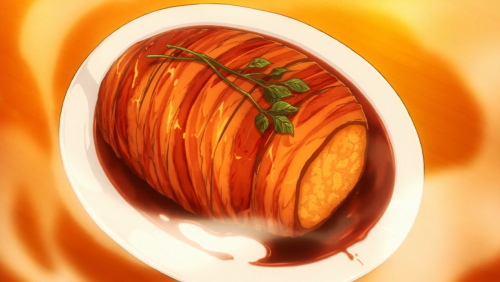

Gotcha Roasted Pork

Roasted pork wrapped in bacon
These pork really is a great dish from food wars but all that beacon fat just let me eat it once in a year
Ingredients
- about 3 packets of bacon
- 6 potatoes
- ½ cup Mushrooms
- 1 small onion
- salt and pepper
- 2 tablespoons of butter
- ¼ cup of red wine
- 2 tablespoons soy sauce
- 1 tablespoon sweet sake
- some rosemary
- butcher twine
Steps
- First mince the onion and mushrooms, and pre heat the oven to 350-370
- Heat some oil (or butter) in the pan and add the onions, sauteing them until they are soft and almost
translucent. Then add the mushrooms and saute until everything is fragrant and soft.
- For the potatoes you want to thoroughly wash them, cut them in to chunks and steam them.
- Steam them until they are soft when you poke with a fork. Remove and peal the skin off. If you arent used to
handling hot items like most of us wait a few minutes for the potatoes to be cool enough for you to handle.
The skin will come off super fast and easy.
- Mash the potatoes but keep them kind of chunky it’ll be easier to work with over super smooth potatoes.
- Add the onions, mushrooms, salt and pepper to the potatoes and mix everything.
- Then you’ll want to form the potatoes into the sphere. Now I layered the first set of bacon onto the
potatoes make sure you cover everything! Bacon can shrink when you’re cooking so you want to make sure it’s
completely covered. I set up the butcher twine as well, then I used a plate and flipped everything over.
- Then you’ll layer the bacon on the other side and it’ll make tying everything up now super easy! you’ll want
to go horizontal and then vertical. I used toothpicks as well to help keep the bacon in place while I tied
the twine.
- Once everything is in place add the rosemary and into the oven it goes! It took me like about 4ish hours to
fully cook this thing! There was also like a good 2ish layers of bacon on it as well. You want to be fully
sure everything gets cooked so make sure you check before you eat anything! If the bacon looks under done
after poking around it put it back in and cook it longer.
- While the gotcha pork is roasting away you can prepare the sauce! I heated up the pan on medium and added
both the soy sauce, sake, and wine. once it’s kind of hot whisk in the butter and let it cook for about 10
minutes. Put to the side and re heat when the pork is ready!
- Once the pork is ready take it out and serve with sauce! Then you’re done!
- Oagariyo!